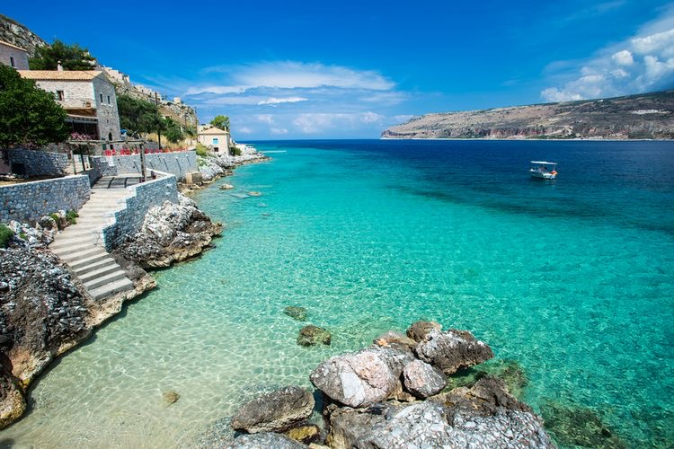
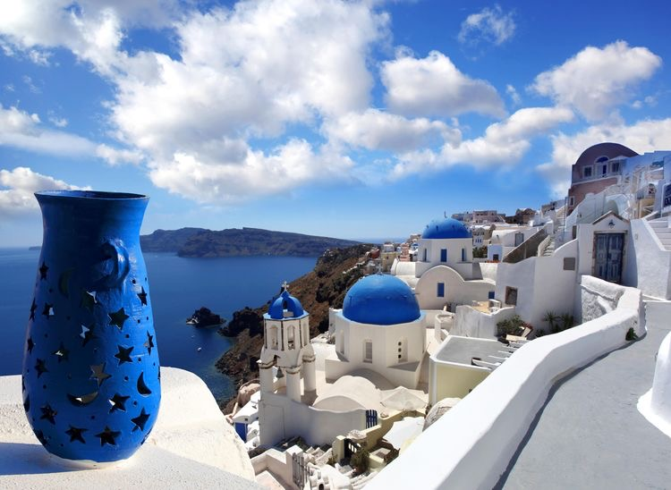
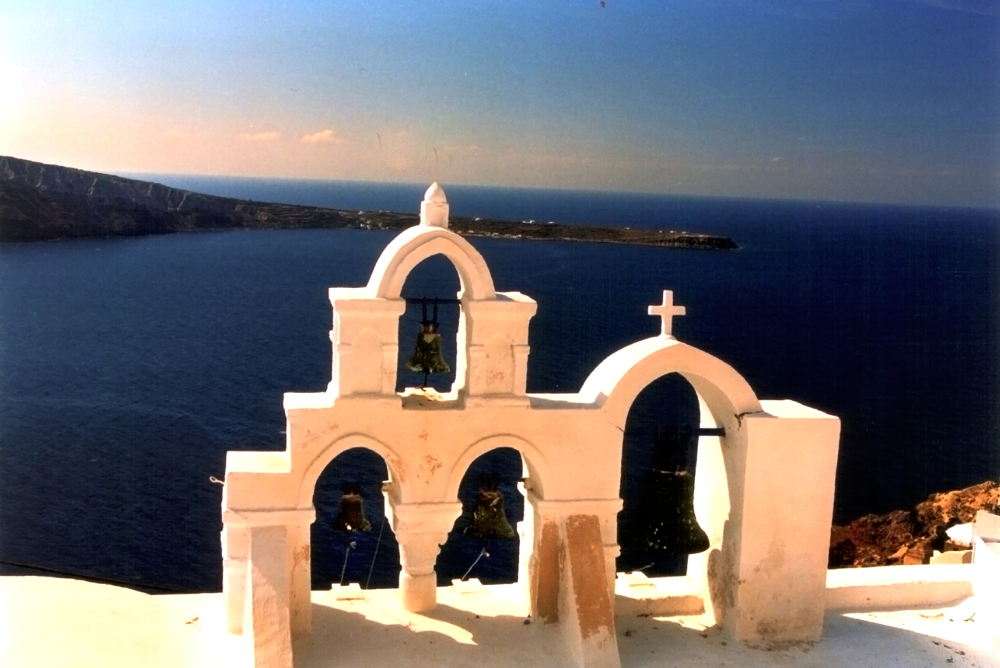
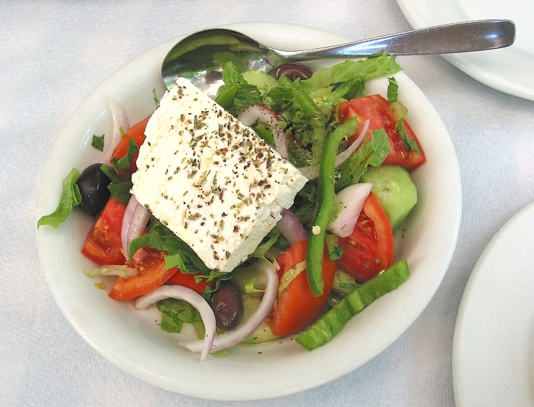

Magnifique, ancienne, élégante, belle, agréable, galante, grandiose… Visiter la Grèce se fait forcément aux côtés d’une longue liste de superlatifs.
Et encore, aucun ne suffit à décrire la Grèce et sa splendeur.

LE PELOPONNESSE
Le Péloponnèse s'étend sur 21 549 km2 et constitue la partie méridionale de la Grèce continentale, dont elle est séparée par le golfe de Corinthe au nord et le golfe Saronique au nord-est. Il n'est relié au continent que par l'isthme de Corinthe, bien que, techniquement parlant, il soit devenu une île depuis le percement de l'isthme par le canal de Corinthe en 1893. Il est également relié au continent par le pont Rion-Antirion, achevé en 2004.
La péninsule se caractérise par un relief montagneux et des côtes très découpées. Son point culminant est le mont Taygète (2 404 m).

SANTORIN
Le nom de Santorin, dérivé de celui de sainte Irène, est attesté dès le milieu du xiie siècle (la première mention connue du nom est faite par le géographe Al Idrissi vers 1154)8.
Après l'indépendance de la Grèce , l'île reprend officiellement le nom antique de Théra mais le nom de Santorin est toujours largement utilisé. Le nom officiel (depuis 19409) d'une des anciennes capitales de l'île, Pyrgos Kallistis, en français « Tour-de-Kallisté » fait référence à l'ancien nom de Kallistē.

OIA
Oia ou Ía (Οία en grec) est une localité de Santorin, petit archipel grec relevant des Cyclades, en mer Égée. Elle est située à 11 km au nord-ouest de Fira, en surplomb de la caldeira, sur la côte constituant la pointe nord-ouest de l'île. Elle est reliée à ses deux ports par des escaliers.
Le village est aussi appelé Apano Meria ou Anomeria (Απάνω Μεριά, Ανωμεριά), Les-Hauts ; il a été renommé Oia dans les années 1930, en référence au port de la ville antique de Théra, situé au sud de l'île sur l'actuelle plage de Kamari2.

NOURRITURE GRECQUE
La cuisine contemporaine grecque utilise beaucoup l'huile d'olive, les plantes aromatiques et les légumes, les graines, le pain, le vin, le poisson, les produits de la mer (poulpes, calamars) et des viandes très variées, comprenant la volaille, l'agneau, le mouton, le lapin et le porc. Les olives, le fromage, les aubergines, courgettes et le yaourt sont une part très importante de cette cuisine. Les desserts grecs ont une dominante caractéristique de noix et de miel. Certains plats utilisent la pâte filo.
Les deux premiers pays les plus consommateurs de mangas sont le Japon et la France1,2,3,4,5.